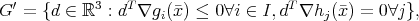
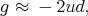

Consider the optimization problem
- (a)
- Show that the feasible region consists of all points of the form (0,a,a) with a ≥ 0, and hence show that every feasible solution is optimal.
- (b)
- Show that no optimal point satisfies the first order KKT conditions.
- (c)
- Show the Abadie constraint qualification G′ = T is not satisfied at any feasible point ,
where T is the cone of tangents at and
 with gi(x) ≤ 0 the inequality constraints, hj(x) = 0 the equality constraints, and I the set of active inequality constraints.
- (d)
- The problem (1) can be written equivalently as the second order cone program
where K is the second order cone,
What is the dual to this conic optimization problem? Show that the dual conic problem is infeasible.
Solution:
- (a)
- We have x2 = x3 from (1d). We then get from (1b) that x12 ≤ 0, so x
1 = 0.
Provided x3 ≥ 0 we are feasible, so we get the stated region.
Every feasible solution has value zero, so every feasible point is optimal.
- (b)
- The gradient condition at the point (0,a,a) is
The first condition cannot be satisfied, so no optimal point satisfies the KKT conditions.
- (c)
- The feasible region is given in part (a), so we get the cone of tangents
Let = (0,a,a) be an optimal point. First assume a > 0, so the second constraint is not active. The set G′ consists of directions d satisfying dT ∇g 1() ≤ 0 and dT ∇h 1() = 0. This forces d2 = d3, but places no restrictions on d1.
Similarly, if a = 0, we get

So in every case we get T ⊆ G′, but T≠G′.
- (d)
- The dual problem is
since K is self-dual. The constraints imply y = s2 = -s3, so s22 = s 32. Then s K requires s12 + s 22 ≤ s 32, so we must have s 12 ≤ 0, so s 1 = 0. But this violates the first dual constraint, so the dual problem is infeasible.
Consider the problem min xf(x), where f(x) is smooth and x n. Given an iterate , in a trust region approach a direction d is chosen by solving a quadratic programming subproblem. Such a trust region subproblem can be stated as
|
| (2) |
with the radius parameter r adjusted as necessary. At each iteration, we perform the following steps:
- Solve (2).
- If f( + d) compares favorably with f(), update x ← + d. Possibly update r.
Else, update r.
The objective function is designed to approximate the underlying objective f(x), with g = ∇f() and Q = ∇2f(). Assume Q is invertible and g≠0.
- (a)
- (5 points) Show that for sufficiently large r, there is a KKT point with d = -Q-1g.
- (b)
- (10 points) Show that in the limit as r → 0, the direction obtained is a positive scaling of the steepest descent direction -g.
- (c)
- (5 points) How could you update r so as to ensure improvement?
- (d)
- (10 points) Assume we are iterating towards a point x* with a positive definite Hessian matrix. How would you update r in order to try to get quadratic convergence?
Solution:
Let u be the KKT multiplier. The KKT conditions require:
- (a)
- If u = 0 then (3a) implies d = -Q-1g. This satisfies (3b) and (3d). It satisfies (3c) provided r2 ≥ gT Q-2g.
- (b)
- Assume 0 < r << ||g||∕||Q||. Then
Then (3a) requires
 so u≠0, and in particular u > 0 from (3d). From (3b), we get dT d = r2, so
and so
a positive scaling of the steepest descent direction.
- (c)
- We can keep halving r, since in the limit we get the steepest descent direction, which is a direction of improvement.
- (d)
- While we are still making good progress, we can keep doubling r, since we get the Newton direction for sufficiently large r, which gives quadratic convergence under certain conditions.
Let x be a scalar variable and set θ(x) = |x|, the absolute value of x. We investigate a method for smoothing this function.
- (a)
- (5 points) Show
(Note that x is a parameter in this subproblem.)
- (b)
- Define
where t is a positive parameter.
- i.
- (15 points) Show the optimal solution w* is
and hence determine ϕ(x).
- ii.
- (10 points) Show ϕ(x) is differentiable in x, for any fixed t > 0. (This requires showing the left and right derivatives agree at the break points x = ±t.)
Solution:
- (a)
- The subproblem in w is a linear program. The optimal solution is
with optimal value |x| = θ(x) in each case.
- (b)
- Let β(w) := xw -w2. This is a strictly concave function of w, so it has a unique
maximizer.
- i.
- We have
so the unconstrained minimizer of β(w) is = x∕t. If |x∕t|≤ 1 then the optimal choice is w* = x∕t. If > 1 then the optimal choice is w* = 1, and if < -1 then the optimal choice is w* = -1. This is the given solution.
In the three cases, we get:
- ii.
- We have the following for the derivative of ϕ(x):
For the middle range -t < x < t, the limit as x → t is 1 and the limit as x →-t is -1, agreeing with the derivatives on the outer ranges. Hence, ϕ(x) is differentiable for all x .